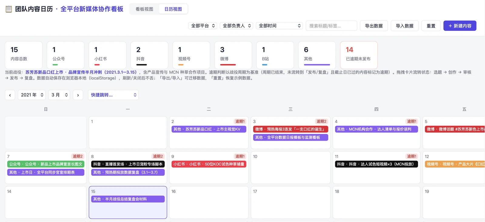
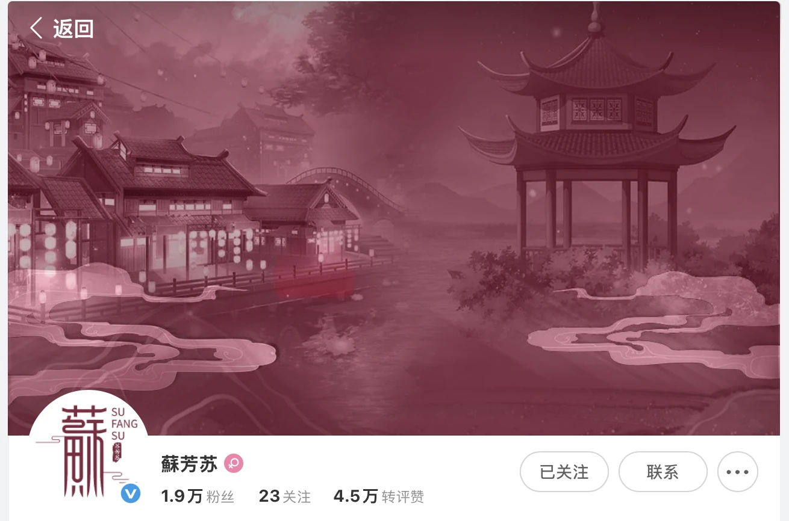

👥 团队管理 · 苏芳苏
从 0 组建 9 人团队，内容产能从 30 条/周提升至 90 条/周
9人
品牌团队从 0 组建（面试 50+，录用 5 人并培养成骨干）
30→90
团队内容产能（条/周）
60万
累计管理合作预算
0→2万+
微博 3 个月涨粉
项目概览
从个人操盘到带团队：把打法写成 SOP。把个人打法沉淀为团队可复用的标准流程，让内容能力从「一个人会」变成「组织会」。
🎯 背景与挑战
品牌部从 0 起步，没有现成流程，也没有沉淀过的内容资产：
- 团队从零组建，岗位定责与考核标准都需从无到有建立
- 内容产能不足：缺少选题库、内容日历与复盘机制，产出不稳定
- 五大平台矩阵需要统一内容定位与视觉规范，协同难度大
- 同步要统管商务线与合作预算，对接 MCN 与视频制作公司
💡 我的策略
我做的是把「个人的经验」翻译成「组织的机制」，核心是三件事：
- 搭机制：建立「选题策划 → 内容生产 → 审核发布 → 数据复盘」全链路协作流程
- 留资产：配套内容日历、选题库与周复盘看板，让经验沉淀成文档而不是留在人脑里
- 拆目标：统筹五大平台矩阵 @蘇芳苏 的内容定位与视觉规范，把增长目标拆解到人
⚙️ 执行过程
01
组建团队
从 0 组建内容＋商务 9 人团队，主导岗位定责与考核标准落地；面试 50+ 人、录用 5 人并培养成能独立负责账号的骨干。
02
搭建机制
落地「选题 → 生产 → 审核 → 发布 → 复盘」协作机制，配套内容日历、选题库与周复盘看板。
03
矩阵统筹
统筹五大平台矩阵的内容定位与视觉规范，将增长目标拆解到人；主抓微博 3 个月从 0 涨粉 2 万+。
04
商务统管
统管商务线与合作预算（累计约 60 万元），对接 MCN 机构与视频制作公司，负责达人 BD 与按 ROI 分配投放资源。
协作看板把内容生产变成可视化的流水线：每条内容从选题到复盘都有明确负责人与状态，产能从 30 条/周提升到 90 条/周，提升 3 倍。
📊 成果数据



团队内容产能 30 → 90 条/周；微博 3 个月从 0 涨粉 2 万+；累计管理合作预算约 60 万元，并完成首个新品上市推广（单条转发 1 万+、阅读 10 万+）。
🧠 复盘与方法论
这两段经历证明：我不只是会做内容，还能把内容能力复制成组织能力。机制、文档与看板，是让一个团队脱离「靠某个人」的关键。
后来在个人 IP 上验证的 AI 工作流，本质上也是同一件事——把判断固化成流程，让产出可复制。